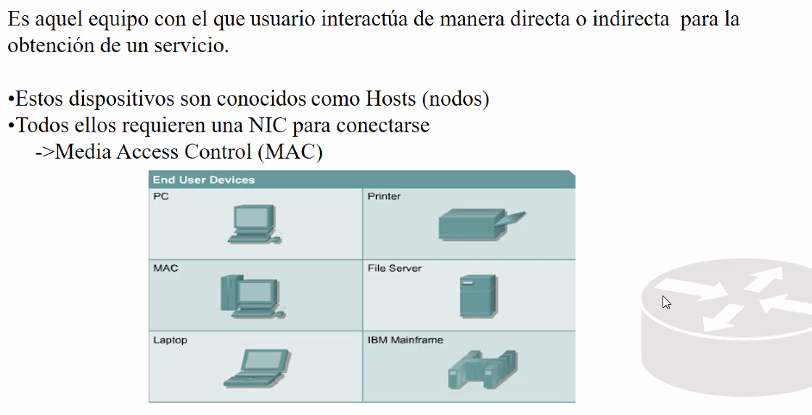

Diraccion MAC: Direcicon fisica.
Esta impresa en tarjetas de red y es inamobible (en principio).
Son unicas en el mundo. Es irrepetible.


Los primeros 24 bits son codigos de empresas y fabricantes.
Los ultimos 24 bits corresponden al producto (tarjeta de red).
¿Cuanto se producjo, donde se produjo, ect?

Todo dispositivo que se conecta a internet requiere de una direccion mac para identificarse en todo el internet.
Equipos intermedios.